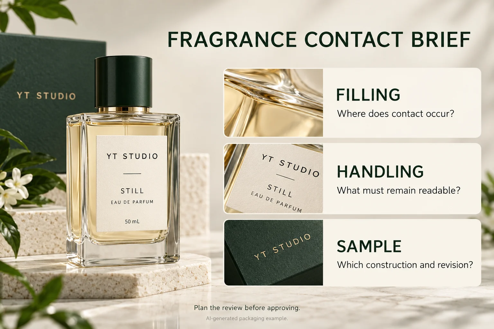

Start with the bottle shape and fill level
Measure the straight-sided area rather than the widest part of the bottle. Rounded shoulders, raised seams and heavy bases can reduce usable space. For very small bottles and sample vials, test a paper mockup at actual size. It quickly reveals whether the type can be read and whether a front-only layout is more practical than a wrap label.
Choose a film that suits the visual direction
Clear film can make a label appear printed directly on glass, while white film gives fine type and pale colors a more reliable base. Matte laminates are often selected for a restrained, tactile look; gloss can strengthen deep color and metallic elements. If the bottle will be handled frequently or exposed to fragrance oils during filling, review the material, adhesive and protective finish together rather than choosing by appearance alone.
Make small-format information readable
Give the brand and fragrance name priority, then use a controlled type scale for concentration, volume and variant details. Avoid reducing every line to fit more copy on the front. A separate back label, carton panel or accompanying insert may be a better home for secondary information. Your compliance team should confirm market-specific statements, ingredients and symbols before artwork approval.
Coordinate the bottle, cap and outer box
Fragrance packaging feels more deliberate when the bottle label and carton use the same logo spacing, color rules and finish family. A foil detail on the carton can echo a small foil mark on the label without making the bottle design busy. For a broader home-fragrance range, see the candle and fragrance label options.
Prepare the proof with scale in mind
Include bottle photos, label size, wrap direction, finish preference and artwork source files. Review the proof at 100% scale and check quiet zones around barcodes or QR codes. This keeps the final label readable and helps the production team assess practical application.
Separate bottle supply from the label decision
A UK-and-Spain perfume seller's public question combined two obstacles: sourcing bottles and finding appropriate alcohol-resistant labels. The stated 5,000 minimum concerned bottles. It was not a label minimum, and a reply's bundled packaging price was not a comparable label quotation. Keep those order lines separate in your own brief.
Ask the bottle source for the actual container reference, surface or coating information and usable panel. Ask the label printer what construction, artwork and sample conditions it can review for that pack. Buying stock bottles first can leave a different label task from commissioning a decorated bottle; neither route is automatically the cheaper or more suitable launch.
Locate the contact event before choosing a sample
Write down whether the concern comes from filling, an occasional dispensing drip, wiping, transport or ordinary handling. Supply the relevant product information through the agreed channel. A vague “perfume proof” request does not establish how much exposure is relevant or which evidence would answer it. Do not substitute a home solvent experiment for a method agreed by the technical parties.
| Brief item | Input to provide | Answer needed before release |
|---|---|---|
| Container and panel | Bottle reference, coating if known, photos and measured label area | Does the proposed sample represent this surface and shape? |
| Product contact | Relevant product information; stage, location and handling concern | Which review method and acceptance requirement apply? |
| Printed sample | Face stock, adhesive, print and finish references; artwork revision | Which exact finished construction does the evidence cover? |
| Information retained | Fragrance name and other approved copy or codes that must stay usable | Who confirms readability and any separate code check? |
| Commercial scope | Quantity by fragrance, label components, destination and required date | What sample, quotation and change conditions are confirmed? |
Complete what you know and mark the rest unresolved. Have the appropriate packaging or quality contact and supplier agree the review, then retain observations with the sample identity. A visually attractive sample does not establish contact resistance; a contact result on another finish or bottle does not silently approve this one. If the representative sample is unavailable, hold that requirement while the supplier clarifies the next step.

Keep sample identification separate from retail approval
A fragrance learner's public post describes printed sample identities disappearing during formulation work. Visible replies report different outcomes with devices and tapes and suggest several possible causes. The useful lesson is to record the sample's purpose and contact conditions, not to conclude that every printer or ribbon behaves the same.
A development sample may prioritize a legible identity linked to a separate record. A retail bottle also needs the brand's approved market copy and presentation. Keep those purposes explicit. Use the existing approved-copy mapping workflow when market versions differ; this brief does not determine the legal wording or certify a bottle for sale.
For custom cosmetic bottle labels, prepare the bottle and panel measurements, approved artwork, quantities by fragrance and the contact question. Use the inquiry form to prepare a message, then send supporting files by email or WhatsApp. Ask what representative sample and written quotation conditions apply before choosing the finish.
Planning a perfume bottle label?
Prepare bottle and panel measurements, approved copy, quantities by fragrance and the actual contact scenario. Ask which representative sample and written project conditions can be reviewed.
Request a Fragrance Label Quote